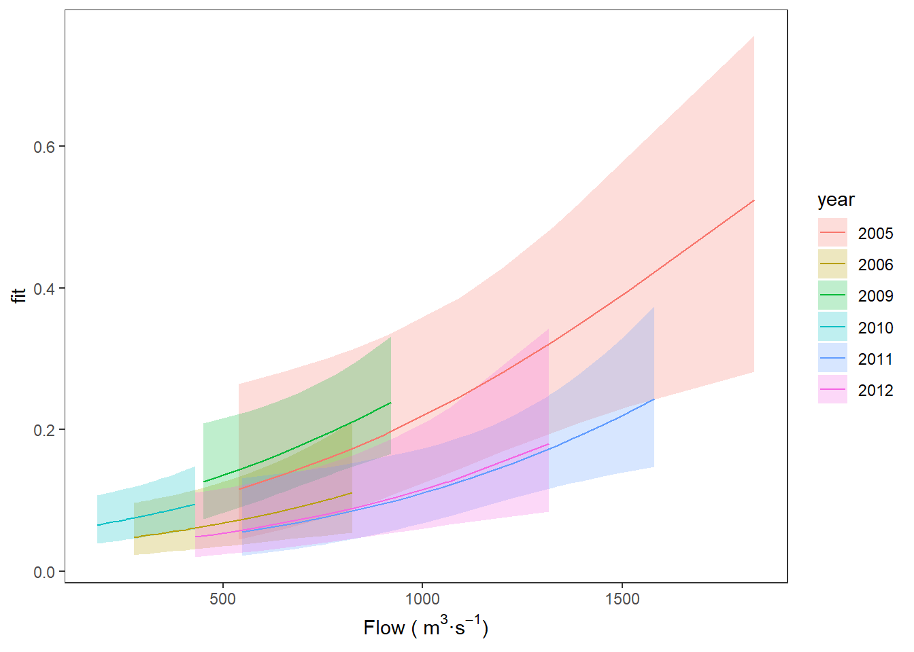

12.4 Binary (logistic) regression
Logistic regression generally is reserved for the case in which we have a binary response that, by definition, can take on values of either 1 or 0. These values can be expressed as outcomes of individual trials (Bernoulli) or as outcomes of some number of trials (Binomial). These data types are common in biological and ecological data analyses, and thus it is important that you understand how to analyze these data when you encounter them because linear models will not accommodate this data type. The easiest way to look at what is going on is to use a worked example.
Let’s read in another smolt data set that we have not yet played with (it’s the last new fish data set for the course, so soak it all up!).
choice <- read.csv("data/StillwaterChoiceData.csv")Look at the first few rows of data:
head(choice)## path year hatchery length mass date flow
## 1 0 2010 1 176 57 118 345
## 2 0 2005 1 205 101 128 1093
## 3 0 2010 1 180 56 118 345
## 4 0 2010 1 193 74 118 345
## 5 0 2005 1 189 76 128 1093
## 6 0 2010 1 180 65 118 34512.4.1 Data Explanation
These data are from a study that examined factors affecting path choice by wild and hatchery-reared endangered Atlantic salmon smolts during seaward migration in the Penobscot River, Maine. State, local, and federal fishery managers were interested in understanding what factors affected migratory routing through the lower river because there were different numbers of dams, with different estimated smolt mortality rates, on either side of a large island hydropower project in this system. If managers could understand factors influencing migratory route, they might be able to manipulate flows, stocking dates, and dam operation to improve survival of these endangered fish. Furthermore, the results of the study were used to predict the effects of dam removal, and hydropower re-allocation in the lower river on population-level consequences for these fish. These data were part of a larger analysis:
Stich, D. S., M. M. Bailey, and J. D. Zydlewski. 2014. Survival of Atlantic salmon (Salmo salar) smolts through a hydropower complex. Journal of Fish Biology 85:1074-1096.
The data consist of the following variables:
path: The migratory route used by individual fish. The choices were main-stem of the river (0) or the Stillwater Branch (1) around the island.
year: The year in which individual fish were tagged and relocated using acoustic telemetry.
hatchery: An indicator describing if fish were reared in the wild (0) or in the federal conservation hatchery (1)
length: Fish length (in mm)
mass: Fish mass (in grams)
date: Ordinal date on which the fish entered the hydrocomplex determined from time-stamps on acoustic receivers
flow: Discharge recorded at the USGS gauge in the headpond of the dam several kilometers upstream of the hydropower complex.
NOTE: the results of this analysis won’t look like the results from the paper just yet. We will talk about why in a couple of weeks when we introduce generalized linear mixed models.
12.4.2 Data analysis
We are going to use the 1/0 binary data to estimate the effects of a number of covariates of interest on the probability that an individual fish used the Stillwater Branch for migration in each year of this study using logistic regression.
In order to do this, we will use the ‘logit’ link function, which can be defined as:
logit <- function(x) {
log(x / (1 - x))
}The inverse of the logit function is:
invlogit <- function(x) {
exp(x) / (1 + exp(x))
}We will use this function to transform the probability of using the Stillwater Branch (0 - 1) onto an asymptotically normal x-y space. So, logit( p(Stillwater) ) is “normal” way down on the inside of our models.
If our response, path is a binary variable where 1 = Stillwater and 0 = mainstem for each fish 1 to n, we can think of p(Stillwater Branch) as:
\[p(Stillwater) = \frac{\sum{path}}{n}\]
and the logit of p(Stillwater Branch) can assumed to be normally distributed with a mean of .
\[logit(p) \sim Normal(\mu, \sigma^{2})\]
Now that we know we are doing more or less the same thing let’s move on with fitting the model.
First, since we are interested in the fixed effects of year, and not the linear trend through time, we need to convert year to factor.
choice$year <- as.factor(choice$year)Now, if we want to test hypotheses about the influences of explanatory variables on the probability of using the Stillwater Branch, we could make models to represent those hypotheses. For example, if we wanted to test whether flow had a significant influence on path across years, then we could build a model that looks like this:
flow_mod <- glm(path ~ year + flow, family = binomial, data = choice)This is the GLM analogue to ANCOVA and it should look pretty much identical except that we now use glm() and we have to specify the family for the sampling distribution depending on what type of data we have. You can see what families are implemented by running ?glm and scrolling down to the family argument in the help file. If you don’t see the one you are looking for, don’t worry - it has probably been implemented in another package somewhere!
We could make another model that investigates effects of length instead of flow:
len_mod <- glm(path ~ year + length, family = binomial, data = choice)Or a model that includes both with an annoying name:
flow_len_mod <- glm(path ~ year + flow + length, family = binomial, data = choice)We could look at these individually to determine variable-level significance using p-values, or compare them as competing explanations using Akaike information criterion (AIC), which we discussed last week.
AIC(flow_mod, len_mod, flow_len_mod)## df AIC
## flow_mod 7 565.0131
## len_mod 7 570.6512
## flow_len_mod 8 565.7209But, we can also streamline this to get other information about the models. To do this:
First, let’s define a slightly more complex set of models based on a priori combinations of explanatory variables.
# Make an empty list to hold the models
mods <- list()
# Now, add models to the list. Stop and think about what each one means.
mods[[1]] <- glm(path ~ year + hatchery + length + flow, family = binomial, data = choice)
mods[[2]] <- glm(path ~ year + flow, family = binomial, data = choice)
mods[[3]] <- glm(path ~ year + hatchery, family = binomial, data = choice)
mods[[4]] <- glm(path ~ year + length, family = binomial, data = choice)
mods[[5]] <- glm(path ~ year + length + hatchery, family = binomial, data = choice)
mods[[6]] <- glm(path ~ year + length + flow, family = binomial, data = choice)
mods[[7]] <- glm(path ~ year + hatchery + flow, family = binomial, data = choice)Next, give the models some names using the formulas for each of the models. Remember: models are stored as list objects in R, and each of those list objects (models) has names. We can reference those names using the $ notation, and from there we can access the actual model formula from the call. The third element of this formula object contains the explanatory variables!! Whoa!
We can extract the formula for each model (which is an element in the mods list) using a for loop to assign them one at a time. Here, we are assigning the ith formula to be the name of the ith element in the list mods. Nifty.
# Assign the formula for each of the models as the name
for (i in 1:length(mods)) {
names(mods)[i] <- as.character(mods[[i]]$call$formula)[3]
}Now, we use the AICcmodavg package to make a model selection table like we did in Chapter 11.4:
# Load the library
library(AICcmodavg)
# Make the model selection table
mod_table <- aictab(cand.set = mods, modnames = names(mods))12.4.3 Interpreting the results
This pretty much proceeds the same way for GLM as it does for linear models until we get to making predictions of the response based on our best model.
Our model selection table is an object in R (right?), and we can reference that object using $ notation, matrix notation [ , ], or by calling rownames to get the index for each of the models. Let’s use this approach to get the best model from our candidate set. Here is a worked example in the code that follows:
# Print the table
mod_table##
## Model selection based on AICc:
##
## K AICc Delta_AICc AICcWt
## year + flow 7 565.16 0.00 0.31
## year + hatchery + flow 8 565.23 0.07 0.30
## year + length + flow 8 565.91 0.75 0.21
## year + hatchery + length + flow 9 567.12 1.96 0.12
## year + hatchery 7 569.50 4.34 0.04
## year + length 7 570.80 5.64 0.02
## year + length + hatchery 8 571.37 6.21 0.01
## Cum.Wt LL
## year + flow 0.31 -275.51
## year + hatchery + flow 0.61 -274.52
## year + length + flow 0.82 -274.86
## year + hatchery + length + flow 0.93 -274.44
## year + hatchery 0.97 -277.68
## year + length 0.99 -278.33
## year + length + hatchery 1.00 -277.59# Look at the structure just to show that it is, indeed, an object:
str(mod_table)## Classes 'aictab' and 'data.frame': 7 obs. of 8 variables:
## $ Modnames : chr "year + flow" "year + hatchery + flow" "year + length + flow" "year + hatchery + length + flow" ...
## $ K : num 7 8 8 9 7 7 8
## $ AICc : num 565 565 566 567 570 ...
## $ Delta_AICc: num 0 0.0674 0.7506 1.9557 4.3408 ...
## $ ModelLik : num 1 0.967 0.687 0.376 0.114 ...
## $ AICcWt : num 0.3078 0.2976 0.2115 0.1158 0.0351 ...
## $ LL : num -276 -275 -275 -274 -278 ...
## $ Cum.Wt : num 0.308 0.605 0.817 0.933 0.968 ...Look at the rownames of the table. These rownames are the index for each of our models as they appear in the mods object, and we can use the index to reference objects inside of the mods list…
rownames(mod_table)## [1] "2" "7" "6" "1" "3" "4" "5"This tells us that the rowname for the best model (the one at the top of the table) is . That means that our best model is stored in position 2 of our model list that we named ‘mods’. Let’s double check it to make sure:
mods[[2]]##
## Call: glm(formula = path ~ year + flow, family = binomial, data = choice)
##
## Coefficients:
## (Intercept) year2006 year2009 year2010 year2011
## -2.911624 -0.518632 0.243194 -0.043979 -0.814334
## year2012 flow
## -0.764289 0.001642
##
## Degrees of Freedom: 758 Total (i.e. Null); 752 Residual
## Null Deviance: 580.2
## Residual Deviance: 551 AIC: 565This looks pretty darn good! We could also do a summary of the model to get the coefficient estimates and the significance codes for the estimated coefficients:
summary(mods[[2]])##
## Call:
## glm(formula = path ~ year + flow, family = binomial, data = choice)
##
## Deviance Residuals:
## Min 1Q Median 3Q Max
## -1.2183 -0.5757 -0.4401 -0.3564 2.4577
##
## Coefficients:
## Estimate Std. Error z value Pr(>|z|)
## (Intercept) -2.9116243 0.7981931 -3.648 0.000265 ***
## year2006 -0.5186319 0.6237029 -0.832 0.405671
## year2009 0.2431939 0.4615202 0.527 0.598235
## year2010 -0.0439789 0.6525993 -0.067 0.946271
## year2011 -0.8143343 0.4029438 -2.021 0.043284 *
## year2012 -0.7642890 0.5137641 -1.488 0.136849
## flow 0.0016416 0.0006195 2.650 0.008052 **
## ---
## Signif. codes: 0 '***' 0.001 '**' 0.01 '*' 0.05 '.' 0.1 ' ' 1
##
## (Dispersion parameter for binomial family taken to be 1)
##
## Null deviance: 580.15 on 758 degrees of freedom
## Residual deviance: 551.01 on 752 degrees of freedom
## AIC: 565.01
##
## Number of Fisher Scoring iterations: 5Cool!! But, what if we wanted the script to always grab the summary of the top model in our model selection table no matter what the rowname was? Well, in that case, we could do this:
summary(mods[[as.numeric(rownames(mod_table[1, ]))]])##
## Call:
## glm(formula = path ~ year + flow, family = binomial, data = choice)
##
## Deviance Residuals:
## Min 1Q Median 3Q Max
## -1.2183 -0.5757 -0.4401 -0.3564 2.4577
##
## Coefficients:
## Estimate Std. Error z value Pr(>|z|)
## (Intercept) -2.9116243 0.7981931 -3.648 0.000265 ***
## year2006 -0.5186319 0.6237029 -0.832 0.405671
## year2009 0.2431939 0.4615202 0.527 0.598235
## year2010 -0.0439789 0.6525993 -0.067 0.946271
## year2011 -0.8143343 0.4029438 -2.021 0.043284 *
## year2012 -0.7642890 0.5137641 -1.488 0.136849
## flow 0.0016416 0.0006195 2.650 0.008052 **
## ---
## Signif. codes: 0 '***' 0.001 '**' 0.01 '*' 0.05 '.' 0.1 ' ' 1
##
## (Dispersion parameter for binomial family taken to be 1)
##
## Null deviance: 580.15 on 758 degrees of freedom
## Residual deviance: 551.01 on 752 degrees of freedom
## AIC: 565.01
##
## Number of Fisher Scoring iterations: 5Here we are asking for the rowname of the first row in our model selection table. We have to convert that to a number from a character string to reference the index in the mods list, and then we can summarize the best model. Another way to do this is:
# First, get the number corresponding to the list index for the best
# model in the candidate set
best <- as.numeric(rownames(mod_table[1, ]))
# Now, get the summary for the model in mods that was the best
summary(mods[[best]])##
## Call:
## glm(formula = path ~ year + flow, family = binomial, data = choice)
##
## Deviance Residuals:
## Min 1Q Median 3Q Max
## -1.2183 -0.5757 -0.4401 -0.3564 2.4577
##
## Coefficients:
## Estimate Std. Error z value Pr(>|z|)
## (Intercept) -2.9116243 0.7981931 -3.648 0.000265 ***
## year2006 -0.5186319 0.6237029 -0.832 0.405671
## year2009 0.2431939 0.4615202 0.527 0.598235
## year2010 -0.0439789 0.6525993 -0.067 0.946271
## year2011 -0.8143343 0.4029438 -2.021 0.043284 *
## year2012 -0.7642890 0.5137641 -1.488 0.136849
## flow 0.0016416 0.0006195 2.650 0.008052 **
## ---
## Signif. codes: 0 '***' 0.001 '**' 0.01 '*' 0.05 '.' 0.1 ' ' 1
##
## (Dispersion parameter for binomial family taken to be 1)
##
## Null deviance: 580.15 on 758 degrees of freedom
## Residual deviance: 551.01 on 752 degrees of freedom
## AIC: 565.01
##
## Number of Fisher Scoring iterations: 5Since this is really the same thing as ANCOVA we can use the Anova() function from the car package to get an ANCOVA-like summary for the model to look at significance of our main effects in an Analysis of Deviance table:
library(car)
Anova(mods[[best]])## Analysis of Deviance Table (Type II tests)
##
## Response: path
## LR Chisq Df Pr(>Chisq)
## year 12.8043 5 0.025283 *
## flow 7.4471 1 0.006354 **
## ---
## Signif. codes: 0 '***' 0.001 '**' 0.01 '*' 0.05 '.' 0.1 ' ' 1Here, we see that there are significant effects of both year and flow on our response, path. But, how on Earth do we communicate these effects?
12.4.4 Making predictions
The first thing to remember here is that we have used a link function to estimate this model, so we cannot use the same method as before to make predictions about our response from the model coefficients.
The second thing to remember here is that by definition we have used an invertible link function to estimate this model so the previous statement is a lie and we actually can use the same method as before to make predictions about our response from the model coefficients. We just need to add an extra step so that we can invert our predictions about the expected value of Y with respect to X.
Confused? Yeah, it’s a little confusing. As always an example always goes a long way…
Let’s start by grabbing the summary for our best model.
c.res <- data.frame(summary(mods[[best]])$coefficients)Now we can look at the coefficient estimates. These estimates may not make a lot of intuitive sense at first. That is because they are on the logit scale.
c.res## Estimate Std..Error z.value Pr...z..
## (Intercept) -2.911624325 0.7981931477 -3.64776913 0.0002645272
## year2006 -0.518631856 0.6237029032 -0.83153670 0.4056705026
## year2009 0.243193850 0.4615202282 0.52694083 0.5982346820
## year2010 -0.043978930 0.6525992875 -0.06739041 0.9462709073
## year2011 -0.814334317 0.4029437518 -2.02096276 0.0432836201
## year2012 -0.764288967 0.5137640800 -1.48762632 0.1368494687
## flow 0.001641583 0.0006194926 2.64988401 0.0080519409If it helps, we can make some predictions. Let’s say we want to ask what was the mean probability of using the Stillwater Branch in 2006 under average flow?. To answer that question, we would do:
# Remember: y = mx + b
logit_pred2006 <- -2.91162 - 0.518631856 + 0.00164 * mean(choice$flow)This is the prediction on the logit scale that we used to fit the model:
print(logit_pred2006)## [1] -2.240364And here it is on the real (probability) scale:
invlogit(logit_pred2006)## [1] 0.09618391So, we would predict that about 15% of the fish used the Stillwater Branch during average flow periods in 2006. But what if we wanted to see the range of responses to flows across all years so we could compare years?
We can do this the same way we did in Chapter 10 with linear models! Now, instead of the interval, we need to tell R whether we want the predictions on the link scale or the real scale, and if it is on the link scale, we’ll want to tell R that we need the estimated standard errors (se.fit = TRUE) so we can derive 95% confidence intervals on the logit scale before we convert them back into probabilities. Finally, we will convert the predictions to the real scale using the invlogit() function we wrote inside a call to apply().
# Make predictions from the best model
logit_preds <- data.frame(predict(mods[[best]], type = "link", se.fit = TRUE))
# Calculate confidence intervals as 1.96 * standard error
logit_preds$lwr <- logit_preds$fit + 1.96 * logit_preds$se.fit
logit_preds$upr <- logit_preds$fit - 1.96 * logit_preds$se.fit
# Invert the link function
real_preds <- apply(logit_preds, 2, invlogit)
# Combine the predictions with the original data
choice_preds <- data.frame(choice, real_preds)Go ahead and have a look at the logit_preds and real_preds objects to make sure you understand what we just did.
Now, we can finish by plotting our predictions:
ggplot(choice_preds, aes(x = flow, y = fit, fill = year)) +
geom_ribbon(aes(ymin = lwr, ymax = upr, fill = year), alpha = 0.25) +
geom_line(aes(color = year)) +
xlab(expression(paste("Flow ( ", m^3, "\u00b7", s^-1, ")"))) +
theme_bw() +
theme(panel.grid = element_blank())
You can see that, in general, there is a relatively low probability of an individual fish using the Stillwater Branch, but we see increasing probability of using that route with increasing flow.